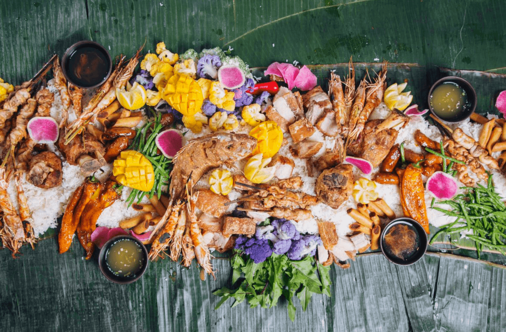

Embark on a culinary journey through the Philippines, where each region offers its own unique flavors. Beyond the well-loved Lechon, Adobo, and Halo-Halo, dive into the rich variety of Filipino cuisine.
Discover the savory delight of Pinakbet, a vegetable stew from the north, and the spicy kick of Bicol Express, a creamy coconut pork dish. Enjoy the hearty Kare-Kare, a peanut-based oxtail stew, and savor the flavorful Batchoy, a noodle soup from Iloilo. Warm up with Bulalo, a comforting beef marrow soup, and indulge in sweet treats like Suman, a sticky rice delicacy, and Bibingka, a coconut rice cake. Don't miss Pichi-Pichi, Cassava Cake, and Puto, each offering a unique taste of Filipino tradition. Taste the Philippines, one unique dish at a time!

Beef Caldereta
Beef is simmered until tender in a spicy tomato sauce. Chockful of potatoes, bell peppers, and green olives complete this classic and hearty Filipino stew.

Beef Bulalo
Tender beef shanks, bone marrow and vegetables in flavorful broth makes this a perfect cold weather food.

Puto Calasiao
The name sounds controversial especially to Spanish speakers. Trust me though, it's completely innocent! It's one of the many forms of Filipino rice cake. Shaped in small bite-sized portions made out of semi-glutinous rice that has been fermented in earthen jars.

Sans Rival Cake
Layers of chewy cashew meringue and luscious French buttercream. This cake definitely stands up to its name!

Chicken Inasal
A Filipino-style BBQ chicken. Marinated in vinegar, calamansi juice, and lemongrass then grilled to perfection.

Chicken Adobo
Probably the most popular Filipino food. Juicy and tender chicken coated in a sweet savoury glaze with little pops of heat from peppercorns.

Boodle Fight
aka Kamayan is a traditional communal dinner where everyone gathers at the table and eats their meal with their hands

Inabraw
A Filipino dish from the north. Featuring various fresh vegetables cooked in a simple broth seasoned with fish bagoong (fermented anchovy sauce). The vegetable combination changes depending on what's in season. And it's usually paired with the best catch of the day: grilled fish or shrimp.

La Paz Batchoy
Another classic Filipino dish, this time from Iloilo City. This noodle soup has pork, liver, heart, and eggs topped with chicharon, fried garlic, and spring onion.

Lato Salad

Ube Halaya

Lumpiang Shanghai

Lechon

Bicol Express

Menudo

Kare-Kare

Leche Flan

Pinakbet

Street Food Style Pork Bbq

Halo Halo

Pancit Palabok

Pichi-Pichi

Sinigang na Baboy

Sinigang na Hipon

Sisig Pork Belly

Tortang Talong

Cassava Cake

Banana Cue

Bibingka Galapong

Bibingka Latik

Lumpiang Sariwa

Dinengdeng Labong

Silvanas

Espasol

Kwek Kwek

Lengua de Gato

Turon

Kutsinta

Maja Blanca

Dinengdeng Lingkamas

Chicken Sotanghon Soup

Sapin-sapin